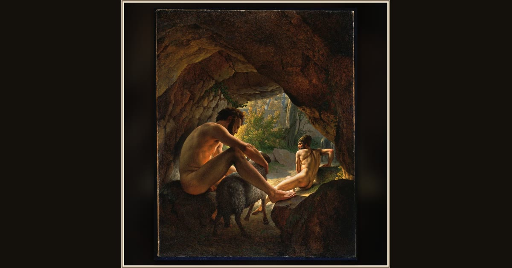

Ulysses Fleeing the Cave of Polyphemus
Christoffer Wilhelm Eckersberg · 1812 · Princeton University Art Museum · Princeton, New Jersey, USA
Blinded Polyphemus searches the dark cave while Odysseus, last to leave, prepares to slip into the dazzling daylight beneath the remaining sheep. Explore its place in Book IX of the Odyssey.